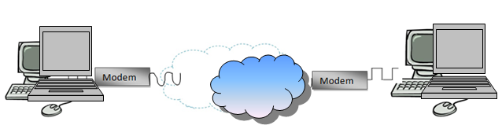

Modemul este un dispozitiv care permite conectarea calculatoarelor la distanţă, transferul datelor realizându-se printr-un mediu de transmisie (linie telefonică, unde radio).
Denumirea dispozitivului provine din cele două roluri pe care le are într-o reţea: modulare-demodulare, adică transformarea semnalului digital de la ieşirea calculatorului în semnal analogic (undă sinusoidală), pentru a putea fi purtat de mediul de transmisie spre celălalt calculator, unde este realizată transformarea inversă a semnalului - din analogic în digital. Un modem de linie telefonică va converti nivelele logice 0 şi 1, prin care sunt reprezentate datele în calculator (sistem binar), în diferite tonuri. În transmisia pe liniile telefonice, frecvenţa tonurilor trebuie să aparţină spectrului audio. Pentru a permite comunicaţia în ambele direcţii simultan (full-duplex), sunt necesare 4 tonuri diferite, câte două pentru fiecare direcţie. Un tip de modem mai performant este cel conectat prin reţeaua de cablu TV. Modemul de cablu este preferabil celui de dial-up, deoarece abonatul la Internet are conexiune permanentă, iar viteza de transfer este mai mare decât în cazul conexiunii dial-up. În reţelele de mare viteză/mare distanţă sunt necesare modemuri corespunzătoare: radiomodem-urile. Acestea permit funcţionarea simultană în mai multe frecvenţe, fiind dotate cu un controller care previne coliziunea pachetelor de date şi transmisia eronată a acestora.
Un parametru esenţial pentru un modem este viteza de transmisie, măsurată în multipli de biţi pe secundă (bps).
Din punct de vedere al amplasării în raport cu computerul, modem- urile pot fi :
• Externe: cele care sunt plasate în afara unităţii centrale
• Interne: cele care se găsesc în interiorul unităţii centrale; se instalează într-un slot PCI sau ISA, având integrat portul serial propriu.
Un paravan de protecţie (firewall-ul) poate ţine la distanţă traficul Internet care poate afecta sistemul calculatorului: hackeri, worms şi anumite tipuri de viruşi. Acesta mai poate împiedica participarea computerului la un atac împotriva altor calculatoare, fără cunoştinţa sau voinţa utilizatorului.
Un firewall cooperează îndeaproape cu un program de routare, care examinează fiecare pachet de date din reţea (cea locală sau cea exterioară) ce va trece prin serverul gateway, pentru a hotărî dacă va fi trimis mai departe spre destinaţie sau nu. De asemenea, un firewall include sau lucrează împreună cu un server proxy care face cereri de pachete în numele staţiilor de lucru ale utilizatorilor.
Un firewall este folosit pentru două scopuri:
• pentru a ţine în afara reţelei utilizatorii rău intenţionati (viruşi, worms, hackeri, crackeri)
• pentru a deservi utilizatorii locali în reţea în mod normal, conform autorizărilor respective.
Un motor de căutare este un sistem software care găsește pagini web care corespund unei căutări web. Acesta caută pe World Wide Web într-un mod sistematic pentru anumite informații specificate într-o interogare de căutare web textuală. Rezultatele căutării sunt, în general, prezentate într-o linie de rezultate, adesea denumite pagini de rezultate ale motorului de căutare (SERP). Informațiile pot fi un amestec de hyperlinkuri către pagini web, imagini, videoclipuri, infografice, articole și alte tipuri de fișiere. Din ianuarie 2022, Google este de departe cel mai folosit motor de căutare din lume, cu o cotă de piață de 90,6%, iar celelalte motoare de căutare cele mai utilizate din lume au fost Bing, Yahoo!, Baidu, Yandex și DuckDuckGo.
În 1996, Robin Li a dezvoltat algoritmul de punctare a site-urilor RankDex pentru clasarea paginilor cu rezultate ale motoarelor de căutare și a primit un brevet american pentru această tehnologie. A fost primul motor de căutare care a folosit hyperlinkuri pentru a măsura calitatea site-urilor web pe care le indexa. Un algoritm foarte asemănător a fost dezvoltat de Google doi ani mai târziu, în 1998. Larry Page a făcut referire la munca lui Li în unele dintre brevetele sale din SUA pentru PageRank. Ulterior, Li și-a folosit tehnologia Rankdex pentru motorul de căutare Baidu, care a fost fondat de el în China și lansat în 2000.